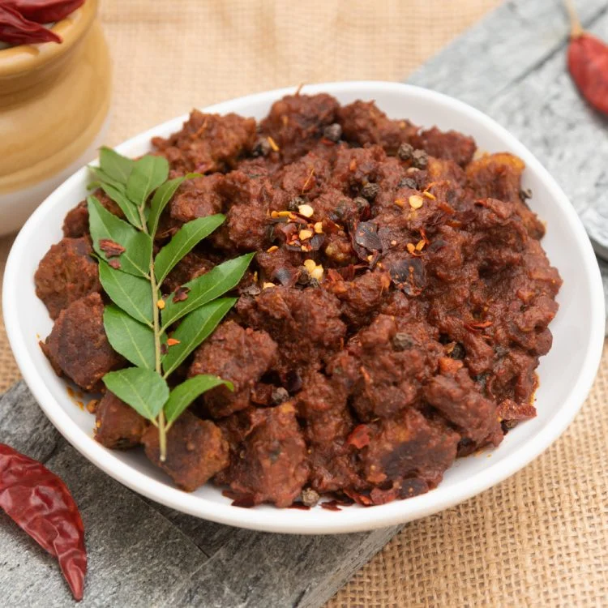

Mutton Varuaval

Description
Mutton Varuaval is a rich goat curry made using a complex balance of flavours. It is a very versatile recipe and cooked in many different ways across South Asia. Perfectly slow-cooked for hours,this goat curry is spicy and delicious, and filled with tender mutton chunks.
Ingerdients :
- 2 pounds goat stew meat, cut into chunks
- 2 teaspoons salt,divided
- 1 teaspoons ground turmeric,divided
- ½ teaspoons ground black pepper
- 2 small red onions,quartered
- 1 ½ tablespoons cocnut oil
-
1 cinnamon stick, broken into pieces
- 2 whole star anise pods
- 4 cardamom pods
- 1 tablespoon fennel seeds
- ½ teaspoon whole cloves
- 2 tablespoons curry leaves, divided
- 1 tablespoon ginger-garlic paste
- 1 small tomato, diced
- 1 teaspoon garam masala
- 1 ½ teaspoons curry powder
- 1 ½ teaspoons ground paprika
- ½ cup choppped fresh cilantro
Directions
- Step 1
- Season goat meat with 1 Teaspoon salt, ½ teaspoon turmeric, black pepper.
- Step 2
- Place red onions i a blender; grind ino a smooth paste.
- Step 3
- Heat 1 ½ taplespoons coconut oil in a dutch oven over medium heat.Add cinnamon stick, star anise, and cardamom pods;cook and stir for 30 seconds. Add remaining 1 teaspoon salt and 1 tablespoon curry leaves;stir in the onion paste. Increase heat to medium-high. Cook and stir curry mixure for 5 minutes; add ginger-garlic paste and continue cooking until flavors meld, about 10 minutes.
- Step 3
- Stir diced tomato into the curry mixture. Cook and stir until mushy, about 4 minutes. Add the seasoned goat meat; cook until browned, 6 to 10 minutes. Transfer goat curry to a slow cooker; cook on High until meat is tender, 2 to 3 hours.
- Step 4
- Heat 1 teaspoon coconut oil in a saucepan over medium heat. Cook and stir the remaining 1/2 teaspoon turmeric, garam masala, curry powder, and paprika until aromatic, about 1 minute. Add a few cups of the curry from the slow cooker; heat until oil rises to the top. Add remaining 1 tablespoon curry leaves and cilantro; cook until gravy thickens, 3 to 5 minutes. Pour back into the slow cooker and blend well.
Now that that is done ,it is time to serve this dish with a little bit of seasoning, hot and tasty.